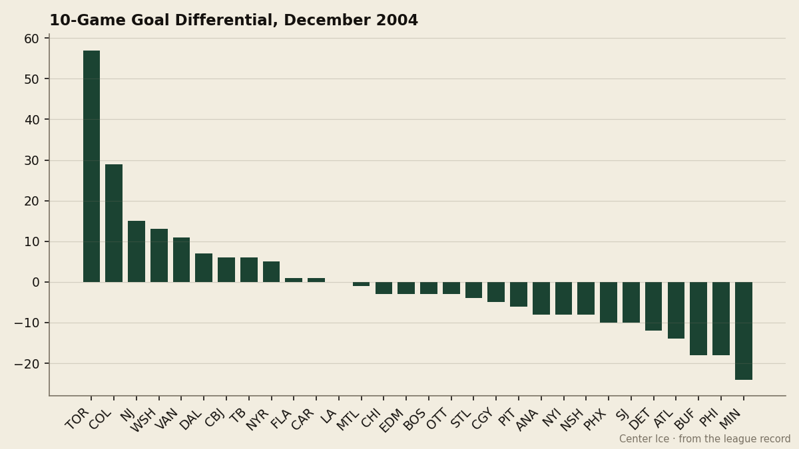

The Blaine Rankings, Week 2: The gap between the elite and the field is now measured in goals, not points
Toronto's +57 in ten games is not a points total that can be chased. It is a statement about what these two clubs are and what everyone else is not.
 Howard BlaineSenior writer, The Blaine Rankings · The Hockey Gazette
Howard BlaineSenior writer, The Blaine Rankings · The Hockey GazetteLast week the argument was whether  Colorado Avalanche and
Colorado Avalanche and  Toronto Maple Leafs had separated themselves from the field on the standings. This week the argument is over. The separation is no longer a matter of points earned; it is a matter of goals inflicted and goals denied, and the numbers have become so lopsided that the only remaining question is whether anyone in the top tier can sustain the pace through April.
Toronto Maple Leafs had separated themselves from the field on the standings. This week the argument is over. The separation is no longer a matter of points earned; it is a matter of goals inflicted and goals denied, and the numbers have become so lopsided that the only remaining question is whether anyone in the top tier can sustain the pace through April.
In their last ten games, Toronto Maple Leafs has outscored opponents 75 to 18. A differential of +57. The next-best club in that window is Colorado Avalanche at +29, and the third is  New Jersey Devils at +15. That is not a ranking; that is a photograph of a sport within the sport. The Maple Leafs are playing a different game than the other clubs, and the 10-game winning streak has produced 75 goals against 18, a margin that would be indefensible even if the sample were half as long.
New Jersey Devils at +15. That is not a ranking; that is a photograph of a sport within the sport. The Maple Leafs are playing a different game than the other clubs, and the 10-game winning streak has produced 75 goals against 18, a margin that would be indefensible even if the sample were half as long.

Colorado Avalanche deserves the same scrutiny in its own terms. The Avalanche sit at 42 points with a 20-4-0 record, and their goal differential of +58 for the season trails Toronto's +71. More striking: Colorado Avalanche is 12-1 on the road. 1 road loss in 13 attempts.  Peter Forsberg89 (52 points, 20.0 minutes a night) and
Peter Forsberg89 (52 points, 20.0 minutes a night) and  Milan Hejduk83 (49 points) are doing the scoring, but the Avalanche have not been a one-line team.
Milan Hejduk83 (49 points) are doing the scoring, but the Avalanche have not been a one-line team.  Teemu Selanne81 has 27 goals and has been the secondary engine all season. Goaltending has been adequate rather than stellar:
Teemu Selanne81 has 27 goals and has been the secondary engine all season. Goaltending has been adequate rather than stellar:  Jamie Storr78 at 2.53 and .876 in 18 starts. Adequate is all you need when the team allows 67 goals in 25 games.
Jamie Storr78 at 2.53 and .876 in 18 starts. Adequate is all you need when the team allows 67 goals in 25 games.
What makes the Toronto number more unsettling is that the club's payroll is $66.97M, third-lowest among the six clubs with 35 or more points. Per point, Toronto is spending $1.67M, which trails only Colorado Avalanche at $1.70M and New Jersey Devils at $1.22M among the league's upper tier. The Maple Leafs are building efficiently at a premium ticket price of $97 and an attendance of 17,408 per game, figures that suggest the market has already accepted the product. New Jersey Devils remains the league's best value story at $44.98M payroll and 37 points.  Martin Brodeur92 has 16 wins against 4 losses and a 2.48 goals-against average, and he is doing it with a roster whose top scorer,
Martin Brodeur92 has 16 wins against 4 losses and a 2.48 goals-against average, and he is doing it with a roster whose top scorer,  Jamie Langenbrunner86, has 43 points in 22 games. New Jersey is 8-4 at home and 9-1 on the road. That road record is the best in the league when you account for total games played, and it has come against schedules that are no easier than anyone else's.
Jamie Langenbrunner86, has 43 points in 22 games. New Jersey is 8-4 at home and 9-1 on the road. That road record is the best in the league when you account for total games played, and it has come against schedules that are no easier than anyone else's.
Now the bottom.  Minnesota Wild has lost 10 consecutive games and has been outscored 26 to 50 in that stretch, a differential of -24. The Wild are 7-16-1 with 17 points and a payroll of $29.97M, the lowest in the league. There is a certain grim logic to it. You cannot expect to compete when you are spending half of what
Minnesota Wild has lost 10 consecutive games and has been outscored 26 to 50 in that stretch, a differential of -24. The Wild are 7-16-1 with 17 points and a payroll of $29.97M, the lowest in the league. There is a certain grim logic to it. You cannot expect to compete when you are spending half of what  Detroit Red Wings spends and the difference shows in every measurable way. But the interesting footnote to Minnesota's freefall is that the club is the most profitable franchise in the league at $31.47M in profit on $48.10M in revenue. The standings do not track the ledger in this league, and that should concern anyone who cares about competitive balance.
Detroit Red Wings spends and the difference shows in every measurable way. But the interesting footnote to Minnesota's freefall is that the club is the most profitable franchise in the league at $31.47M in profit on $48.10M in revenue. The standings do not track the ledger in this league, and that should concern anyone who cares about competitive balance.
Speaking of Detroit: $80.89M in payroll for 26 points. That is $3.11M per point, the worst number in the league by a wide margin, and it comes with a 5-game losing streak and a last-10 differential of -12. Detroit Red Wings is 8-9-4 and drifting, and at some point the ownership group is going to have to ask what $80.89M is buying when the answer appears to be a team that scores 89 goals in 24 games and allows 99.  Brett Hull77 has 42 points at age 40, which is remarkable, but one remarkable player cannot carry a payroll of that magnitude.
Brett Hull77 has 42 points at age 40, which is remarkable, but one remarkable player cannot carry a payroll of that magnitude.
The one club that deserves a mention as a possible third entry into the elite conversation is  Washington Capitals. 3 straight wins, a last-10 differential of +13, and 46 goals in 10 games.
Washington Capitals. 3 straight wins, a last-10 differential of +13, and 46 goals in 10 games.  Jaromir Jagr83 has 54 points on a pace of 177, the best pace in the league among active players with 50 or more points. If the Capitals are 27 points after 25 games and the pace holds, they are a 88-point club. The issue is that +13 in the last 10 is built on a 46-33 goal line, which means the Capitals are scoring a great deal and conceding a great deal, and that style of hockey has a way of reverting in January and February.
Jaromir Jagr83 has 54 points on a pace of 177, the best pace in the league among active players with 50 or more points. If the Capitals are 27 points after 25 games and the pace holds, they are a 88-point club. The issue is that +13 in the last 10 is built on a 46-33 goal line, which means the Capitals are scoring a great deal and conceding a great deal, and that style of hockey has a way of reverting in January and February.
For the Vezina conversation: Brodeur leads the league in wins at 16 and sits at 2.48 with a .886 save percentage.  Ed Belfour91 has a .907 in 10 games, a better number, but the sample is thin and Toronto's defensive structure is what is driving it.
Ed Belfour91 has a .907 in 10 games, a better number, but the sample is thin and Toronto's defensive structure is what is driving it.  Jean-Sebastien Giguere91 has a 2.99 and .874 in 22 starts for
Jean-Sebastien Giguere91 has a 2.99 and .874 in 22 starts for  Mighty Ducks of Anaheim, which is better than his record suggests. The Hart race is Guerin at 58 points, Jagr at 54 and the best pace, Forsberg at 52 with the best supporting cast. I would put Forsberg first in that order, and I will say so again when the standings shift.
Mighty Ducks of Anaheim, which is better than his record suggests. The Hart race is Guerin at 58 points, Jagr at 54 and the best pace, Forsberg at 52 with the best supporting cast. I would put Forsberg first in that order, and I will say so again when the standings shift.
The point of all of this is simple. The standings at Christmas are the standings in April, and right now the standings say that 2 clubs are genuinely different from the other 28. The only question left is whether the gap widens.